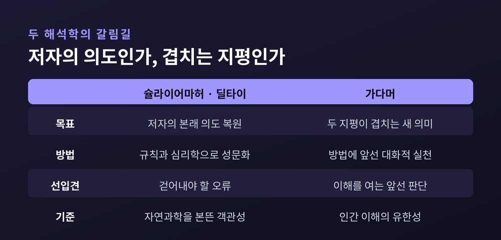
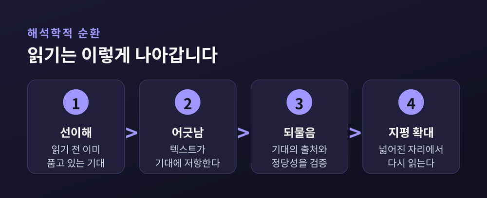
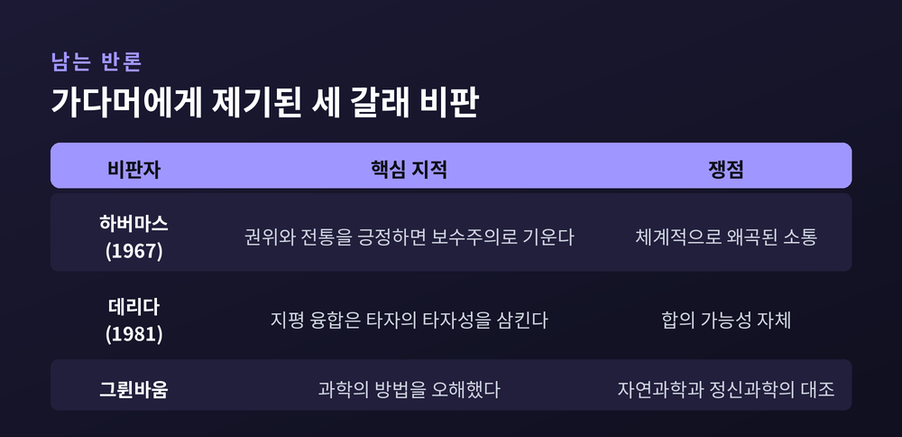

세 줄 요약
오늘은 가다머의 해석학적 순환을 정리해 보겠습니다. 이해가 선입견에서 출발한다는 이 주장은 우리 상식과 정면으로 부딪힙니다. 그 충돌이 어디서 오는지, 어떤 반론이 뒤따랐는지 차례로 짚어보겠습니다.
한스게오르크 가다머는 1900년 마르부르크에서 태어나 2002년 하이델베르크에서 102세로 눈을 감았습니다. 긴 생애였지만 철학사에 결정적으로 남은 저작은 하나입니다. 1960년 튀빙겐에서 나온 『진리와 방법(Wahrheit und Methode)』입니다. 부제는 '철학적 해석학의 근본 특징'이었습니다. 영어권 독자가 이 책을 읽기까지는 다시 15년이 걸렸습니다. 영역본은 1975년에야 나왔습니다.
출발점은 스승 하이데거에게서 왔습니다. 하이데거는 『존재와 시간』(1927)에서 이해에 '앞선 구조'가 있다고 보았습니다. 무언가를 해석하기에 앞서, 그것을 미리 붙잡게 해주는 밑그림이 이미 작동한다는 뜻입니다.
스탠퍼드 철학백과는 이를 그림 한 점으로 설명합니다. 어떤 작품을 이해하려면 그 작품에 대한 선행 이해가 이미 있어야 합니다. 그것이 "캔버스 위의 물감 자국 한 무더기"라는 정도의 이해일지라도 그렇습니다. 그런 최소한의 밑그림조차 없다면, 그것은 이해할 대상으로조차 보이지 않습니다.
가다머는 이 통찰을 받아 자기 작업을 "후기 하이데거의 사유 노선을 이어 전개하려는 시도"라고 밝혔습니다.
가다머가 상대한 진영은 둘이었습니다.
하나는 자연과학의 엄밀한 방법을 본떠 자기를 정당화하려던 근대 인문학입니다. 다른 하나는 독일 안의 해석학 전통이었습니다. 슐라이어마허는 해석 실천을 규칙으로 성문화할 형식적 방법론을 세우려 했습니다. 딜타이는 그 이해를 인도할 '심리학'을 정교화하려 했습니다.
두 사람이 공유한 전제는 같았습니다. 텍스트를 올바로 해석한다는 것은 그것을 쓴 저자의 본래 의도를 회복하는 일이라는 믿음입니다.
가다머는 이 전제를 놓습니다. 저자의 주관적 체험을 재구성한다는 것은 헤겔이 이미 밝혔듯 애초에 가능하지 않다고 보았기 때문입니다.
다만 흔한 오해 하나는 짚고 가야겠습니다. 가다머는 방법 자체를 부정하지 않았습니다. 스탠퍼드 철학백과는 이 점을 두 차례나 못 박습니다. 그의 주장은 방법론적 관심이 무의미하다는 것이 아니라, 방법의 역할이 제한적이며 이해가 대화적이고 실천적인 활동으로서 먼저 온다는 것입니다.

해석학적 순환이라는 말은 가다머 이전부터 있었습니다. 전체는 부분에서, 부분은 전체에서 이해된다는 규칙입니다. 이해의 운동은 한쪽에서 다른 쪽으로 갔다가 다시 돌아옵니다. 그 왕복에서 양쪽에 대한 이해가 함께 넓어집니다.
하이데거는 이 규칙을 존재론의 자리로 옮겨놓았습니다. 순환은 이제 방법의 규칙이 아니라, 모든 이해가 '언제나 이미' 이해할 것에 내맡겨져 있다는 사실을 가리킵니다.
가다머가 여기에 덧붙인 개념이 '완전성의 선취'입니다. 우리는 눈앞의 텍스트가 앞뒤 맞는 하나의 의미 있는 전체라고 미리 가정하고 읽기 시작합니다. 그 가정 없이는 한 문장도 읽히지 않습니다. 중요한 것은 이 가정이 수정 가능하다는 점입니다.
그래서 순환은 제자리를 도는 원이 아닙니다.
낯선 책을 펼칠 때를 떠올려 보시면 좋겠습니다. 우리는 어떤 기대를 품고 첫 장을 넘깁니다. 세 장쯤 읽으면 그 기대가 어긋납니다. 기대를 고쳐 잡고 다시 읽습니다. 다시 어긋나고, 또 고쳐 잡습니다. 가다머는 이 왕복 자체를 이해라고 부릅니다.
여기서 요구되는 것은 태도 하나입니다. 상대의 의미를 내 기대 안에 끼워 넣는 것만으로는 부족합니다. 내 기대가 어디서 왔고 정당한지를 검증하려는 의지가 필요합니다. 그 의지에서 지평이 넓어집니다.

가다머의 가장 도발적인 대목이 여기입니다.
독일어 Vorurteil은 우리말로 선입견이라 옮기지만, 글자 그대로는 '앞선 판단'입니다. 라틴어 prae-judicium이 그 뿌리입니다. 가다머는 이 중립적이고 긍정적인 뜻을 되살리려 했습니다.
예전에는 선입견을 남김없이 걷어낸 자리에서 참된 이해가 시작된다고 여겼습니다. 지금 가다머가 말하는 것은 정반대입니다. 우리를 닫아버리기는커녕, 선입견이야말로 이해할 것을 향해 우리를 열어주는 바로 그것이라는 주장입니다.
『진리와 방법』의 유명한 한 문장이 이를 압축합니다. "모든 선입견의 극복이라는 계몽주의의 전면적 요구는, 그 자체가 하나의 선입견임이 드러날 것이다."
논리는 단순합니다. 계몽주의는 전승 대신 이성을 권위의 최종 원천으로 세웠습니다. 그러나 절대적 이성은 없습니다. 가장 자유로운 정신도 인간인 한 유한하고, 유한한 정신은 무한한 진리를 통째로 붙잡지 못합니다.
물론 가다머도 선입견이 왜곡을 낳을 수 있다는 점을 인정합니다. 그의 요점은 선입견이 언제나 왜곡하지는 않는다는 데 있습니다. 그렇다면 문제 있는 선입견은 어떻게 걸러낼까요. 가다머는 시간적 거리를 답으로 들었습니다. 다만 이 대목은 학계에서도 충분치 않다는 평가를 받습니다. 오히려 이해 과정에서 벌어지는 대화적 상호작용이 더 나은 여과 장치라는 지적이 있습니다.
한 가지는 분명히 해두겠습니다. 가다머에게 선입견은 감옥이 아닙니다. 우리는 선입견의 순환에도, 역사의 영향에도, 언어에도 벗어날 수 없이 갇혀 있지 않습니다.
가다머는 이해가 언제나 역사의 '결과'라고 말합니다. 우리는 우리를 형성한 특정한 역사와 문화 안에 박혀 있습니다. 이 사실을 자각하는 의식이 영향사적 의식(wirkungsgeschichtliches Bewußtsein)입니다.
그런데 이 자각은 결코 완결되지 않습니다. 우리의 역사는 이해 과정에서 계속 다시 작동하기 때문에, 자기 상황을 완전히 투명하게 들여다보는 일은 불가능합니다. 가다머가 헤겔의 반성철학과 명시적으로 갈라서는 지점이 여기입니다.
이해가 일어나는 자리를 그는 '지평'이라고 부릅니다. 어떤 의미든 그것이 놓이는 더 큰 맥락입니다. 지평은 고정되어 있지 않습니다. 타자와 만나면 흔들리고 움직입니다.
두 지평이 만나 하나의 공통 틀을 세우는 사건이 지평 융합(Horizontverschmelzung)입니다.
번역을 떠올리면 감이 잡힙니다. 좋은 번역은 원문을 그대로 옮기지도 않고, 우리말에 맞게 뭉개지도 않습니다. 원문의 세계와 우리가 사는 세계가 겹치는 새로운 자리를 만들어냅니다. 그 자리에서는 원문도 우리말도 이전 그대로 남지 않습니다.
가다머가 모든 해석은 곧 번역이라고 말한 이유가 여기 있습니다. 그리고 이 과정은 끝나지 않습니다. 최종 완결도, 완전한 해명도 없습니다.
가다머는 이해에 세 번째 계기를 되살립니다. 적용입니다.
『진리와 방법』의 문장은 이렇습니다. "적용은 이해라는 현상의 나중 부분도, 이따금 있는 부분도 아니며, 처음부터 그 전체를 함께 규정한다."
법정을 떠올려 보겠습니다. 판사는 조문의 뜻을 먼저 완전히 파악한 뒤 사건에 갖다 붙이지 않습니다. 눈앞의 사건이 조문을 어떻게 읽어야 하는지를 되비춥니다. 사건을 통해 조문이 새로 읽히고, 새로 읽힌 조문이 사건을 판단합니다. 이해와 적용이 한 몸입니다.
가다머는 이 구조를 아리스토텔레스의 프로네시스, 곧 실천적 지혜에서 가져왔습니다. 『니코마코스 윤리학』 6권의 개념입니다. 프로네시스는 규칙 목록으로 환원되지 않고, 직접 가르쳐지지도 않으며, 언제나 눈앞의 개별 사례를 향합니다. 그리고 타자를 이해하는 일 안에 자기를 이해하는 일이 함께 들어 있습니다.
가다머는 자신이 법 해석학에서 오히려 많이 배웠다고 말했습니다. 실제로 그의 논의는 뒤에 법이론과 신학, 문학이론으로 넓게 퍼졌습니다.
같은 구조가 고전 읽기에도 작동합니다. 우리가 오늘 『논어』를 읽는 이유는 2500년 전 문장의 원형을 복원하기 위해서가 아닙니다. 지금 우리 물음이 그 문장을 다시 읽게 만들기 때문입니다. 가다머에게 전통이란 박제된 보존이 아니라 계속되는 전승입니다.
가다머가 예술을 설명할 때 꺼내는 열쇠말이 '놀이(Spiel)'입니다.
놀이는 주체가 마음대로 부리는 활동이 아닙니다. 놀이에는 그 자체의 질서와 구조가 있고, 노는 사람은 거기에 자신을 내맡깁니다. 축구를 하는 사람이 축구를 통제하는 것이 아니라 경기의 흐름에 실려가듯 말입니다.
대화도 그렇습니다. 진짜 대화의 진행과 결말은 어느 한쪽이 통제하지 못합니다. 사태 자체가 대화를 끌고 갑니다.
가다머 자신의 표현이 이 태도를 잘 보여줍니다. "내 진짜 관심은 우리가 무엇을 하는지가 아니라, 우리의 의욕과 행위를 넘어서서 우리에게 무슨 일이 일어나는지에 있다."
그리고 이 모든 일은 언어 안에서 일어납니다. 가다머에게 언어는 세계와 만나기 위한 도구가 아니라 만남 자체의 매체입니다. 우리는 언어 '안에' 있음으로써 세계 '안에' 있습니다. 『진리와 방법』이 남긴 가장 유명한 명제가 여기서 나옵니다. "이해될 수 있는 존재는 언어다."
여기까지가 가다머의 주장입니다. 그러나 이것을 최종 결론으로 받아들이기에는 반론이 만만치 않습니다.
가장 유명한 반론은 위르겐 하버마스에게서 나왔습니다. 1967년, 사회과학 방법론 논의의 맥락에서였습니다. 하버마스는 『철학 평론』 특별호에 「『진리와 방법』 서평」을 실었고, 이 글은 뒤에 『사회과학의 논리에 관하여』(1970)에 들어갑니다. 같은 해 가다머도 「해석학적 문제의 보편성」과 「수사학, 해석학, 이데올로기 비판」으로 응수했습니다.
하버마스의 지적은 날카롭습니다. 권위와 전통을 정당한 지식의 원천으로 인정하는 순간, 해석학은 이데올로기적 보수주의로 기울 위험을 안는다는 것입니다. 그는 프로이트의 정신분석을 모델 삼아 '체계적으로 왜곡된 소통'이라는 개념을 제시했습니다. 권력 관계가 대화 자체를 처음부터 비틀어 놓았다면, 그 안에 있는 사람에게는 왜곡이 보이지 않습니다. 이럴 때 필요한 것은 전통 안의 대화가 아니라 전통 바깥에 설 수 있는 심층 해석학이라는 주장입니다.
가다머 쪽 답은 이랬습니다. 자신의 작업은 계몽주의의 과잉 반작용에 대한 교정일 뿐이라는 것입니다. 이 논쟁에는 카를오토 아펠, 알브레히트 벨머, 폴 리쾨르도 뛰어들었습니다. 판정은 아직 나지 않았다고 보는 편이 정확합니다.
두 번째 반론은 자크 데리다에게서 왔습니다. 1981년 4월 파리 소르본의 「텍스트와 해석」 학술대회에서 두 사람이 마주 앉았습니다. 독일 해석학과 프랑스 후기구조주의의 첫 대면이었습니다. 데리다의 문제 제기는 근본적이었습니다. 지평 융합이라는 개념 자체가 타자의 타자성을 결국 삼켜버리는 것 아니냐는 물음입니다. 그는 이해의 우선성과 합의의 가능성 자체를 의심했습니다.
이 만남은 유명한 논쟁이 되었지만, 대화로서는 성공하지 못했습니다. 리처드 번스타인이 그 정황을 논문 제목으로 요약했습니다. 「일어나지 않은 대화」였습니다.
세 번째 반론은 다른 각도에서 옵니다. 철학자 아돌프 그륀바움은 가다머가 과학의 방법을 오해했으며, 자연과학과 정신과학 사이에 잘못된 대조를 세웠다고 비판했습니다. 방법의 한계를 말하는 것과 방법을 정확히 아는 것은 별개의 일입니다.

정리하면 이렇습니다.
가다머의 해석학적 순환은 이해에 관한 방법론이 아닙니다. 우리가 이미 그렇게 하고 있는 일에 대한 서술입니다. 우리는 선입견을 앞세워 읽기 시작하고, 텍스트에 부딪혀 그 선입견을 고치고, 고쳐진 자리에서 다시 읽습니다.
그러니 남는 것은 하나입니다 — 선입견을 없애려 애쓰기보다, 자기 선입견이 어디서 왔는지 물을 수 있는 자리에 서는 일입니다.
물론 이 입장에는 한계가 있습니다. 왜곡된 대화 앞에서 해석학이 무엇을 할 수 있는지, 하버마스의 물음은 여전히 유효합니다. 가다머의 답이 충분했다고 말하기는 어렵습니다.
그럼에도 그가 남긴 물음 하나는 오래 갑니다. 내가 지금 이 글을 이렇게 읽는 이유는 무엇인가. 그 물음 앞에 잠시 멈춰 서신다면, 가다머를 읽은 보람은 이미 절반쯤 챙기신 셈입니다.